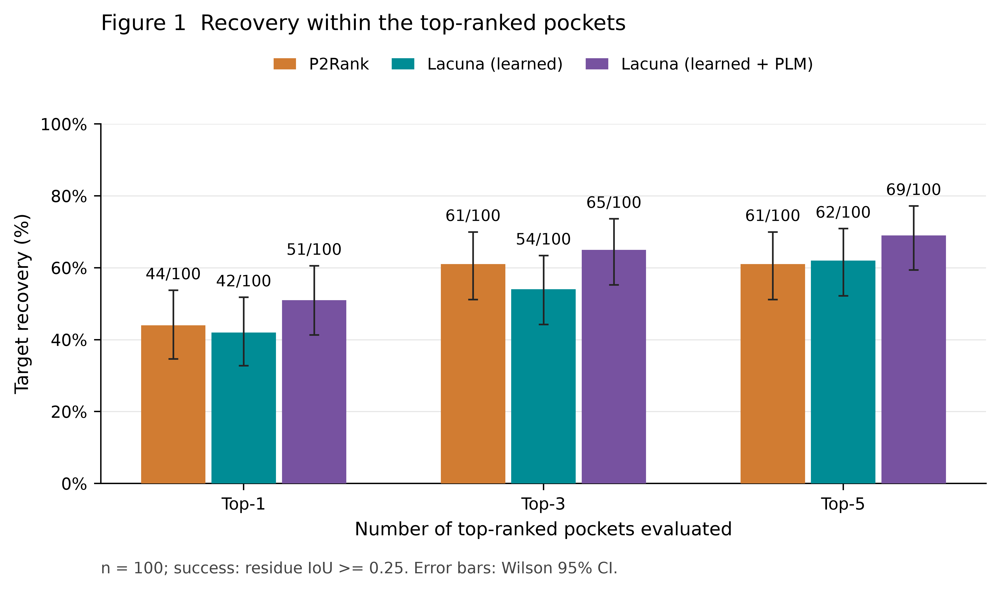
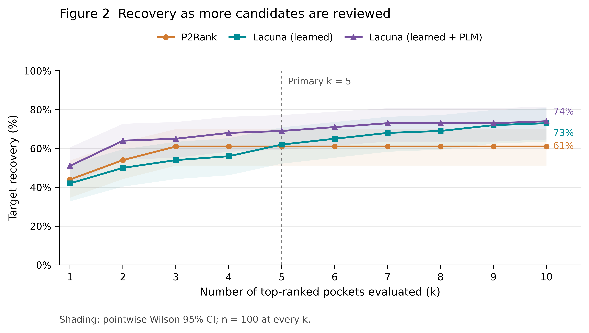
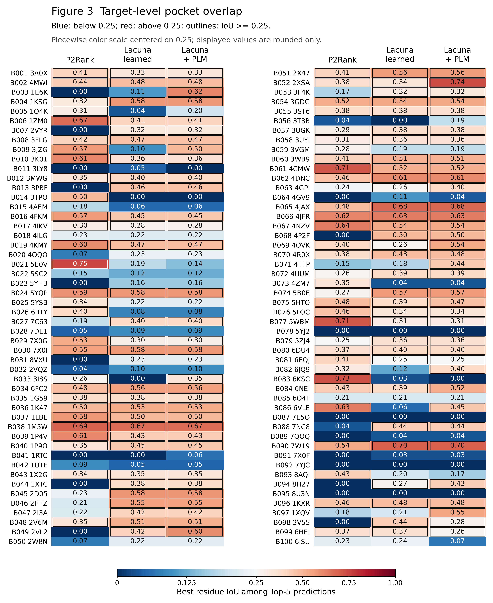
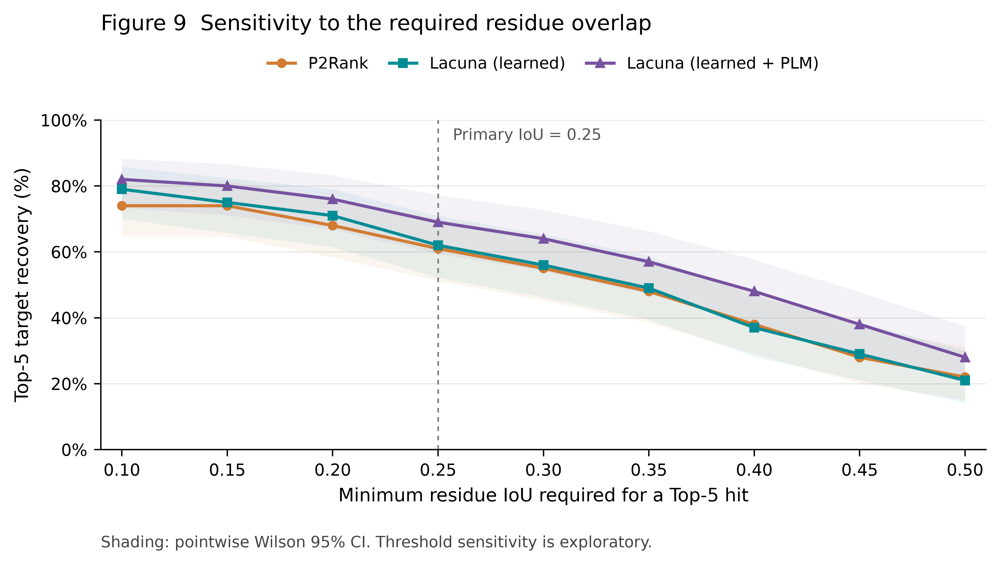
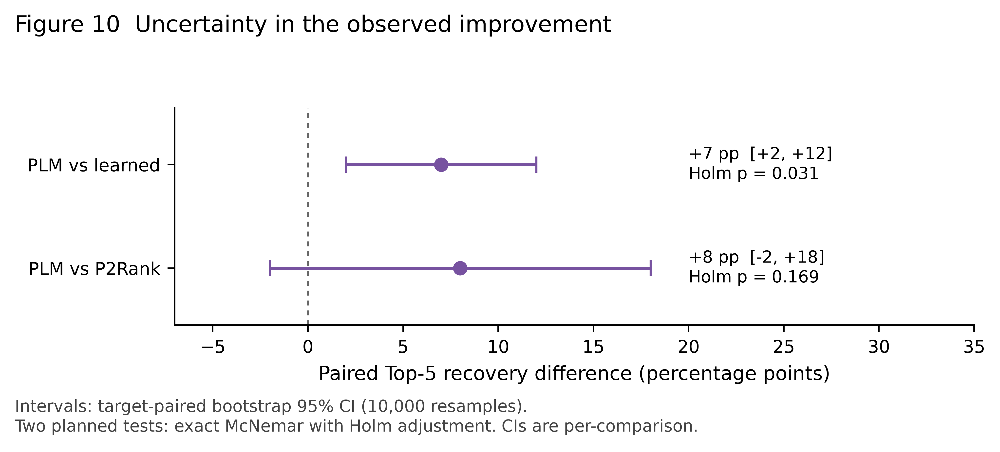
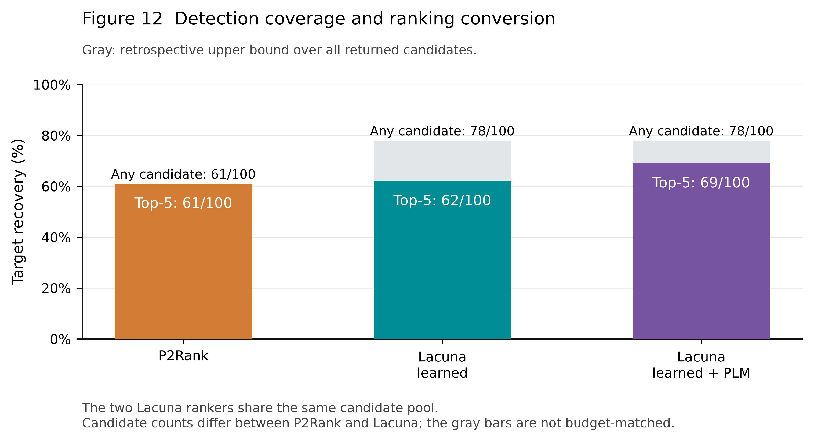

An independent comparison of default P2Rank and Lacuna learned and learned + PLM on the same 100 filtered CryptoBench test targets. No model was trained on these targets for this project.
README · Methods · Selection and leakage scope · Limitations · Target list
| Configuration | Top-1 | Top-3 | Top-5 |
|---|---|---|---|
| P2Rank | 44/100 | 61/100 | 61/100 |
| Lacuna learned | 42/100 | 54/100 | 62/100 |
| Lacuna learned + PLM | 51/100 | 65/100 | 69/100 |
Success: at least one individual Top-k pocket reaches residue IoU ≥0.25 against the annotated reference union. The PLM improvement over learned is supported in this cohort; superiority over P2Rank is not established. This is not a development-blind external test.






Each value is the best reference-overlap IoU within Top-5. It is not the predictor confidence or a calibrated binding probability.
| ID / PDB | Protein | P2Rank | Learned | Learned + PLM |
|---|